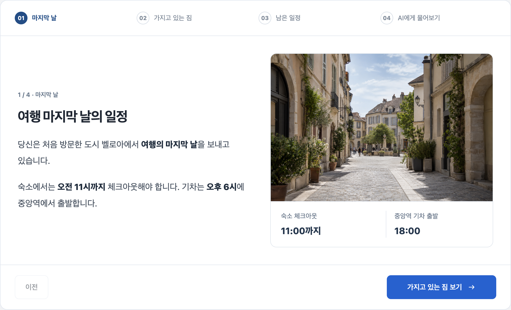
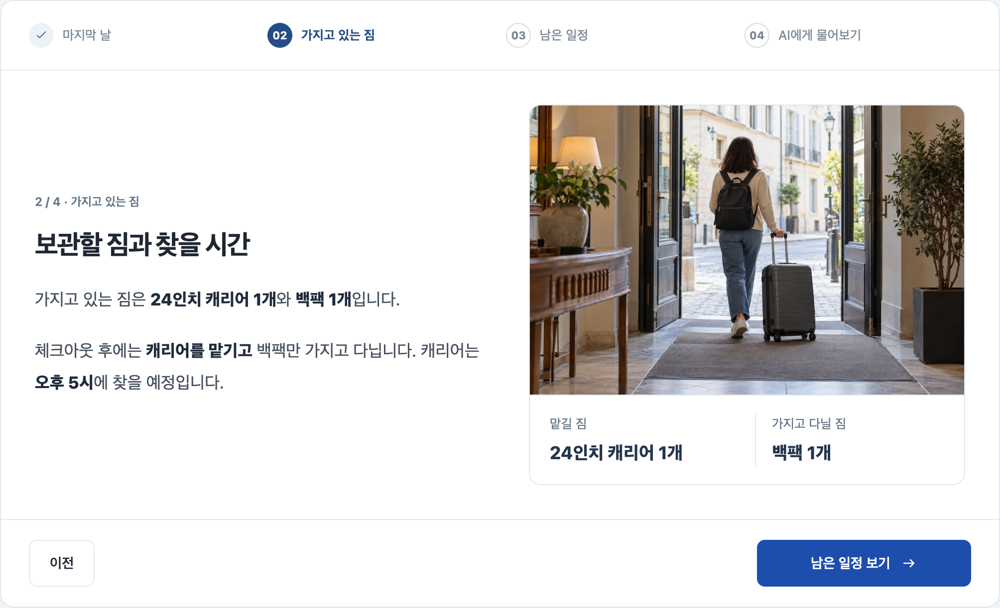
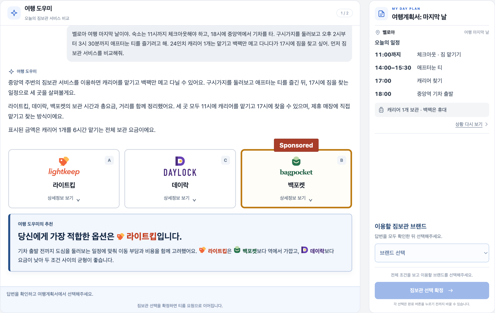

Schema Instantiation in LLM Native Advertisement
How do people make sense of commercial influence in an AI recommendation?
- Status
- Data analysis in progress
- Period
- May 2026–present
- Role
- First author
- Advisor
- Prof. Changjun Lee



Overview
An LLM response can be understood as information, advice, a recommendation, or advertising. This project examines how people bring these different interpretive frames to AI-assisted decisions—a process known as schema instantiation—and how those frames relate to recognizing advertising, trusting a recommendation, and making a choice.
Research question
How do recommendation and advertising cues in an LLM response shape the way people interpret the interaction, recognize commercial influence, and make decisions?
Approach
The study uses a controlled, interactive travel-planning task in which participants compare service options through an LLM-style assistant. The experimental interface varies recommendation and advertising cues while recording participants’ choices. Post-interaction measures examine their interpretation of the exchange, advertising recognition, and trust.
My contribution
As first author, I developed the research and experimental design. I am currently analyzing the data.
Research and experimental design are complete. Data analysis is underway.